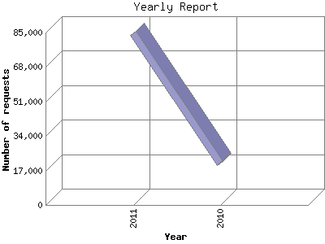

The Yearly Report shows total activity on your site for each calendar year.
Remember that each page hit can result in several server requests as the images
for each page are loaded.
Note: Most likely, the first and last years
will not represent a complete year's worth of data, resulting in lower hits.

| Year | Number of requests | Number of page requests | |
|---|---|---|---|
| 1. | 2010 | 20,460 | 1,330 |
| 2. | 2011 | 84,465 | 6,134 |
Most active year 2011 : 6,134 pages sent. 84,465 requests handled.
Yearly average: 3,732 pages sent. 52,462 requests handled.
This report was generated on June 7, 2011 09:47.
Report time frame November 28, 2010 00:14 to June 6, 2011 23:44.
| Web statistics report produced by: analog 6.0 / Report Magic 2.21 |